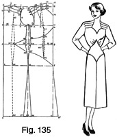
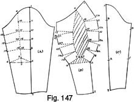

Early 1940's—Ladies' Garment Cutting and Making
by
F. R. Morris
Chapter XI—Sleeves for Dresses
THERE is a saying in the trade at the moment that "the sleeve makes the dress." Of recent designs this is certainly true, for sleeves have had the attention of designers concentrated upon them exclusively to the end of added interest in the design as a whole.
It is certainly true that the addition of an intricate sleeve to a dress minimizes the need for a great deal of design in the body part, and so we have pouched, pleated, gathered and leg-of-mutton sleeves featured with recent dress styles.
The majority of intricate sleeve designs can be evolved from a basic one-piece sleeve pattern with manipulation, though in the majority of instances it is practically impossible to obtain a sleeve pattern by straight drafting. A certain amount of cutting about of the basic pattern is necessary before the desired result is achieved.
Dress sleeves are based upon the same principles as coat sleeves, with amendment to the draft for the requirements of the smaller armhole, and consequent less quantity of fullness in the sleeve crown in addition to the general narrower cut in the sleeve width at the elbow and cuff.
From the basic one- and two-piece sleeve patterns, any sleeve design with darts, pleats or pouched effects can be cut in a few moments providing the basic principles of manipulating and cutting about of the outline pattern are thoroughly understood. So the author will show the basic drafts for one- and two-piece sleeves in their outline form and illustrate how to cut the many sleeve design variations in vogue at the moment.
Basic Draft (Fig. 125 (a))
The draft of the scye is as follows, based upon a 36-inch bust size.
To draft—
Square lines from X.
- 1 from X = the back depth = one-third of the scale plus 1½ inches.
- 2 from X = the natural waist length = 15½ inches.
- 3 from X = the back neck width = one-sixth of the scale less ¼ inch.
- 4 from 3 = the back neck height = ¾ inch.
- Shape the back neck curve from 4 to X as shown.
- 5 from 1 = the half-back width.
- Square up from 5 to 6 on the line from X.
- Square out from 1 to 7 half the bust measure plus 1 inch.
- Square up and down from 7 to 8 and 9.
- 10 from 8 = one-twelfth of the scale.
- Square back from 10 to 11 one-sixth of the scale.
- The across-chest width from 12 to 7 = half the scale less 1 inch.
- 13 from 12 = one-sixth of the scale less ¼ inch.
- Square up from 13 to 14 equal to the distance from 7 to 10 less ½ inch.
- 15 from 6 = 1 inch.
- Square out from 15 to 16 ¼ inch, and shape the back shoulder seam from 16 to 4.
- 17 from 14 = the front shoulder width equal to the back shoulder width less ¼ inch.
- 18 from 17 = 1 inch. Shape the front shoulder seam from 18 to 14.
- Shape the scye from 18 to 19 and 16, hollowing ¼ inch in advance of the line from 12 to the line from X to 8.
- 19 is located at half the distance from 1 to 7.
The front sleeve pitch is located at A, ¾ inch up from the base of the scye line at 12.
The back pitch B is located at half the back depth from X to 1 up from 5.
The following measures derived from the scye outline are necessary—
(1) The height of the back sleeve pitch from the breast line to calculate the base of sleeve depth.
(2) The sleeve crown height, derived from the position of the shoulder seams in their relation to the height of the back pitch from the breast line after they have been sewn together.
(3) The circumference measure round the top-scye from the front pitch A to the shoulder end at 18 and from the back shoulder end at 16 to the back pitch B.
(4) The circumference measure of the under-scye, measured from the back pitch B round the under-scye to 19 and the front pitch A.
(5) The total scye circumference, combining the top- and under-scye measures.
(6) The full sleeve length, measured either from the centre back to the elbow and wrist or alternatively from the sleeve seam at the shoulder end to the wrist over the forearm.
These days dress sleeves are worn very long instead of the normal length, to crease over the hand at the wrist and to act as a safeguard to the sleeve shortening up the arm in wear, which is a fault in tightly-fitting dress sleeves.
One-piece Sleeve Basis Draft (Fig. 125 (b))
Fig. 125 (b) illustrates the one-piece sleeve draft. The following measures are derived from the scye—
- The back pitch height from the breast line = 3¾ inches.
- The crown height = 1¼ inches.
- The top-scye circumference = 8½ inches.
- The under-scye circumference = 7¼ inches.
- The total scye circumference = 15¾ inches.
- The sleeve length from the centre back to wrist = 29 inches.
To draft—
Square lines from X.
- 1 from X = the height of the pitch B from the breast line in Fig. 125 (a).
- 2 from 1 = ½ inch.
- 3 from 2 = the top-scye circumference applied diagonally less ½ inch.
- 4 from 3 = one-third of the distance from 2 to 3 plus ¾ inch.
- 5 from 4 = the crown height = 1¼ inches.
- 6 is located at midway of X to 4.
- Shape the sleeve crown from 2 to 6, 5 and 3.
- Square down from 4 to 7 the full sleeve length applied diagonally from 3 to 7 less the width of the halfback measure.
- 8 from 7 = ¾ inch. Square each way from this point at right angles with the line from 4 to 7.
- The width of the sleeve at the wrist for an average 36-inch bust woman should be approximately 8 inches, so to systematize the cuff width it is calculated as half the total scye circumference.
- Therefore 9 from 8 = one-eighth of the total scye circumference.
- 10 from 8 = one-eighth of the total scye circumference.
- 11 from 9 = ¼ inch.
- 12 from 10 = ¼ inch. Shape from 11 through 8 to 12.
- 13 from 11 = one-third of the distance from 11 to 12.
- Measure round the under-scye from the front pitch A to the underseam at 19 in Fig. 125 (a) and apply this quantity from 2 to locate point 14 on the line squared out from 1.
- By line 2 to 11, square across from 14 to 15, making 2 to 14 equal to 2 to 15.
- By line 2 to 11, square across from 13 to 16, making 16 to 9 equal to 13 to 9.
- Shape from 2 to 15 and from 11 to 16 and join 15 to 16 for the underseam of the sleeve.
- Measure up the under-scye from the back pitch B round the scye to 19 in Fig. 125 (a) and apply this quantity from 3 direct to locate point 17 on the line squared from 1 to 14.
- Join 3 to 12 and by this line square across from 17 to 18 and 19.
- 19 from 18 = 18 to 17.
- Shape the under-sleeve shape from 3 to 19 as shown.
- By line 3 to 10, square across from 13 to 20, making 13 to 10 equal to 10 to 20.
- Shape the sleeve cuff from 12 to 20 to complete the sleeve draft.
 Two-piece Sleeve Basis Draft (Fig. 126
(a))
Two-piece Sleeve Basis Draft (Fig. 126
(a))

The scye measures are as enumerated for the one-piece sleeve draft. The hindarm seam is displaced towards the underneath of the sleeve, and a three-quarter sleeve finish to the forearm seam is also included in the draft outline.
To draft—
Square lines from X.
- 1 from X = the height of the back pitch from the breast line less ½ inch.
- 2 from 1 diagonally = the top-scye circumference measure less ½ inch.
- 3 from 2 = one-third of the distance from 1 to 2 plus ¾ inch.
- 4 from 3 = 1¼ inches.
- 5 is midway of X to 3.
- Shape the sleeve head from 1 to 5, 4 and 2.
- Line down from 1 to 6 and apply the sleeve length less the width of the half-back measure diagonally from 2 to 6.
- 7 from 6 = 1 inch.
- Square out from 7 to 8 and 9.
- 8 from 7 = ¾ inch.
- 9 from 8 = one-fourth of the total scye circumference.
- Line from 9 to 6 to locate point 10.
- 11 for the position of the elbow is located at half the distance from 1 to 6.
- Square out from 11 to 12 1¼ inches.
- Join 2 to 9 to locate point 13 on the line squared out from 11,
- 14 from 13 = 1¾ inches.
- 15 from 14 = ½ inch.
- 16 from 2 = the quantity the back pitch is lowered on the scye.
- Shape the hindarm seam from 16 to 14 to 9.
- Measure up the under-scye from the front pitch A to the back pitch B in Fig. 125 (a) less the quantity the back pitch is lowered from 2 to 16.
- Shape the under-sleeve seam from 17 to 15 and 9.
- 18 squared out from 1 = one-sixth of the scale.
- Shape from 1 to 18 and 17 as shown for the under-sleeve run.
- Add ¾ inch from 1 to 19 and reduce the under-sleeve a similar quantity from 1 to 20.
- 21 and 22 are each ¾ inch from 12, and 23 and 24 are each ¾ inch from 10, point 24 coinciding with 6. Shape the forearm sleeve seams as shown.
One-piece Sleeve (Fig. 126 (b))
Fig. 126 (b) illustrates the draft of a one-piece sleeve for dresses, with the seam at the forearm instead of at the underarm.
This sleeve is very suitable for cutting pouched effects at the hindarm, as it is cut on the fold of the material at this section.
The scye measures are derived from Fig. 125, and are as follows—
- The back pitch height from the breast line = 3¾ inches.
- The crown height = 1¼ inches.
- The top-scye circumference = 8½ inches.
- The under-scye circumference = 7¼ inches.
- The total scye circumference = 15¾ inches.
- The sleeve length from the centre back to wrist = 29 inches.
To draft—
Square lines from X.
- 1 from X = the back pitch height from the breast line less ½ inch.
- 2 from 1 diagonally = the top-scye circumference less ½ inch.
- 3 from 2 = one-third of the distance from 1 to 2 plus ¾ inch.
- 4 from 3 = the crown height = 1¼ inches.
- 5 is located midway of 3 to X.
- Shape the sleeve head from 1 to 5, 4 and 2.
- Apply the under-scye circumference measure from 1 to locate point 6.
- 7 is midway of 6 to 2 to ensure that the hindarm line from 7 is exactly midway of the full width of the sleeve.
- Square up from 7 to locate point 8 on the crown of the sleeve
- Square down from 1 to 9 the full sleeve length, less the width of the half-back measure, applied diagonally from 2 to 9.
- 10 from 9 = 1 inch.
- 11 from 10 = ¾ inch.
- Line from 1 to 11.
- 12 from 11 = one-fourth of the total scye circumference.
- Line from 12 to 9 to locate point 13 on the line from 1 to 11.
- 14 is midway of 1 to 13 for the position of the elbow.
- 15 from 14 = 1¼ inches.
- Shape the forearm seam run from 1 to 15 and 13.
- Square out from 14 and 15 to 16 which is located by squaring down from 7 and 8.
- Shape the hindarm run from 8 to 16 and 12 as shown.
- 17 from 1 = one-sixth of the scale.
- Shape from 1 to 17 and 8 for the under-sleeve seam run.
- Fig. 126 (c) illustrates the shape of the sleeve when opened out.
- An increase of width in the sleeve may be achieved as shown by the dash line in Fig. 126 (b) in which the hindarm line from 8 to 16 is widened 2 inches to locate point 18.
- Line from 8 to 18 and 19 approximately 3 inches below 18, and then shape from 20 8 inches above the wrist to 19 as shown.
- The sleeve at the hindarm is cut on the fold of the material from 8 to 18 and 19 and then seamed from 19 to 20 and 12 as Fig. 126 (c).
The Raglan Sleeve (Fig. 127)
Raglan sleeves for dresses are deservedly popular at the moment, for they are definitely possessed of greater style value than the plain set-in sleeve, in addition to their ability to harmonize with practically any bodice or skirt design. Though the raglan sleeve with the overarm seam is not used to a great extent, it is always advisable to adhere to the shoulder construction embodying a dart from the neck to the shoulder end in preference to the shoulder construction giving a whole raglan shoulder sleeve without the dart.
The shoulder section of Fig. 127 is constructed to agree with the measurements in accordance with the proportions of a 36-inch bust figure, and the working scale is 18 inches.
To draft—
Square lines from X.
- 1 from X = the back depth = one-third of the scale plus 1½ inches.
- 2 from 1 = the natural waist length.
- 3 from X = the back neck width = one-sixth of the scale less ¼ inch.
- 4 from 3 = the back neck height = ¾ inch. Shape from 4 to X.
- 5 from 1 = the half-back width. Square up from 5 to locate point 6 on the line squared out from X.
- 7 from 1 = the half-bust measure plus 1 inch.
- Square up and down from 7 to locate points 9 and 8.
- 10 from 9 = one-twelfth of the scale.
- Square out from 10 to 11 one-sixth of the scale.
- 12 from 7 = one-fourth of the bust measure less 1 inch.
- 13 from 12 = one-sixth of the scale less ¼ inch.
- Square up from 13 to 14 equal to the distance from 7 to 10 less ½ inch.
- 15 from 6 = 1 inch.
- Square out from 15 to 16 ¼ inch, and shape from 16 to 4 for the back shoulder seam run.
- Join 14 to 16.
- 17 from 14 = the back shoulder width from 16 to 4 less ¼ inch.
- 18 squared down from 17 = 1 inch. Shape the front shoulder seam from 18 to 14 as shown.
- Shape the scye from 18 to 19 and 16, hollowing ¼ inch in front of the line from 12.
- 19 is located at half the distance from 1 to 7.
- Square down from 19 to 20 at the waist line.
- 21 is midway of 7 to 12.
- 22 from 14 for the shoulder dart equals the distance from 14 to 11.
- Shape out the bust dart from 21 to 14 and 22 as shown.
- 23 from 10 = one-sixth of the scale.
- Shape the neck curve from 23 to 11 as shown.
- To construct the raglan shoulder seams—
- 24 from 14 = 1 inch. This quantity is variable and dependent upon the
design of the dress. In some instances, the width of the raglan sleeve horn
is wider than others, while, at other times, the seams run away to
practically nothing at the neck.
- In this draft, the author has arranged for the raglan sleeve seams to be 1 inch apart when finished. The advantages of facilitating making-up are deciding factors in the width advocated.
- As 24 is located on the line from 14 to 13, the bust dart intersects the raglan shoulder seam, and this must be taken into account so that, when the bust dart is sewn out, the raglan seam continues in a similar run to that marked from 24 to the front pitch A.
- Join 24 to the pitch A, and shape the seam from 24 to A, adding ½ inch of run to the seam between these points.
- 25 from 11 = the distance 24 is from 14, i.e. 1 inch.
- 26 is located where the construction line from 24 to A intersects the line of the bust dart from 21 to 22.
- 27 is located where the seam from 24 to A intersects the same bust dart line.
- Therefore, to reproduce the shape of the raglan shoulder seam, allowing for the bust dart through the shoulder, square across from 26 to 28 and 27 to 29.
- 28 from 21 = the same length as 21 to 26.
- 29 from 21 = the same length as 21 to 27 to ensure that when the bust dart is sewn out, 26 will agree with 28 and 27 with 29, making the raglan shoulder seam run from 25 to 29, 27 and A continuous.
- Join 25 to 28 and shape the shoulder seam from 25 to 29.
- 30 = half the distance from 25 to 11.
- The raglan shoulder construction allows the back sleeve horn to be ½ inch in width to agree with the width of the front sleeve horn from 25 to 30.
- The reduction of 1 inch from the front shoulder ensures the centre seam of the raglan shoulder being placed exactly on the top of the shoulder at 30.
- The back pitch B is located at half the back depth, from X to 1, up from point 5.
- Square back from point B to 31½ inch.
- Join 31 to 4 and add ½ inch of curve to the raglan shoulder seam between these points.
It is advisable to keep the back width for a raglan style rather on the narrow side; otherwise, there is a tendency for the sleeve to cause creases at the back of the armhole when the arm is at the side. The author prefers to think of raglan sleeves as a part of the bodice instead of a separate entirety, and to systematize the construction on a magyar sleeve basis, varying the seam runs irrespective of the outline of the normal scye. Individuality of design is not achieved by adhering to the set outlines of conventional ideas, but by courageously departing from the stereotyped lines and drafting our seams to obtain the artistic appreciation of good style and line.
To do this we must always think of the sleeve and bodice as a whole and add to one the quantity taken from the other.
The Raglan Sleeve Draft (Fig. 128)
For the object of illustrating the construction of the raglan sleeve shoulders, a one-piece sleeve basis draft has been adopted. The constructional points described are equally applicable to any other type of sleeve, so it is unnecessary to describe more than the application of the systematic principles to one type of sleeve.
The method of constructing the raglan horns on the one-piece sleeve base is the principle of measuring the shape of the displaced sections of the shoulders and applying these quantities to the sleeve head to obtain the shape of the raglan shoulders on the sleeve in a similar manner to cutting away the shoulder sections and laying them in position on the sleeve head as described in Chapter VIII (Fig. 57). If an intricate shoulder seam design is intended, it is necessary to cut the shoulder sections from the body part and then lay in position on the sleeve draft in a similar way to the cutting of drop-shoulder line sleeves.
The scye measurements are as follows—
- The height of the back pitch from the breast line = 3¾ inches
- The crown height = 1¼ inches
- The top-scye circumference = 8½ inches
- The under-scye circumference = 7¼ inches
- The total scye circumference = 15¾ inches
- The sleeve length from the centre back to the wrist = 29 inches
To draft—
Square lines from X.
- 1 from X = the back pitch height from the breast line less ½ inch.
- 2 from 1 = ½ inch.
- Square out from X and 2.
- 3 from 1 diagonally = the top-scye circumference less ½ inch.
- 4 from 3 = one-third of the distance from 1 to 3 plus ¾ inch.
- 5 from 4 = the crown height = 1¼ inches.
- 6 is midway of X to 4.
- Shape the sleeve head of the normal sleeve from 1 to 6, 5 and 3 as indicated by the dash lines.
- Square down from 4 to 7 the full sleeve length applied from 3 to 7, less the width of the half-back measure.
- Square across from 7 to 8 ¾ inch.
- 9 from 8 and 10 from 8 together equal one-fourth of the total scye circumference.
- Join 9 to 1.
- 11 from 9 and 12 from 10 are each respectively ¼ inch.
- Shape the cuff run from 11 to 12.
- Measure round the under-scye from the front pitch A to the underarm seam at 19 in Fig. 127 and apply this quantity from point 1 to 13 on the line squared out from 2.
- Measure round the back-scye from the back pitch B to the underarm seam at 19 in Fig. 127, and apply this quantity from point 3 direct to 14 plus ½ inch for ease.
- The position of the underarm of the sleeve is located at 15, one-third of the distance from 12 to 11 from 11.
- By line 1 to 9, square across from 15 to 16, making 16 from 11 equal to 11 to 15.
- Shape from 16 to 11.
- By line 1 to 9, square across from 13 to 17, making 17 from 2 equal to 13 from 2.
- Shape from 17 to 1 for the underseam of the sleeve from the front pitch to the sideseam.
- Square down from 3 to locate point 18. 18 is squared from 12.
- 18 to 19 = 18 to 12.
- By line 3 to 18, square across from 15 to 20, making the distance from 20 to 18 equal to the distance from 18 to 15.
- 21 from 18 = 8 inches for the wrist dart.
- Shape from 12 and 19 to 21 for the dart and from 19 to 20 for the completion of the cuff shape.
- By line 3 to 18, square across from 14 to 22 and 23, making 23 from 22 equal to 22 to 14.
- Shape the hindarm seam run from 23 to 20.
The construction of the raglan shoulders is as follows—
- Measure the distance from the front pitch A to 26 plus 28 to 25 on the front shoulder in Fig. 127, and apply this quantity in a sweep from 1 to strike an arc at 24.
- Then measure the width of the front shoulder seam from 18 to 22 plus 14
to 11 in Fig. 127, and sweep this quantity in an arc from point 5 to
intersect the arc from 1 at point 25.
- Now, as the length of the raglan shoulder seam has been taken from A to 27, 29 and 25 in Fig. 127, the width of the sleeve horn from 25 to 30 must be applied from 25 to 26 in Fig. 128 in an upward direction on the sweep from 5 to 25, because the triangle formed by the distances from 5 to 25 and 1 on the sleeve corresponds with the triangle on the shoulder formed by the distances from A to 25 and 18 in Fig. 127.
- Therefore, mark from 25 to 26 on the sweep from 5 equal to the distance from 25 to 30 on the shoulder section.
Similarly, if the point 25 were lower than 1 inch from the neck point, the measurements taken and applied as above would give an accurate shape of the front shoulder section for adapting to the sleeve head.
The back sleeve horn is constructed in a like manner.
- Measure the distance on the back shoulder from the back pitch B to 4 in Fig. 127, and apply this quantity in a sweep from 3 to strike an arc at 27.
- Measure the width of the back shoulder seam from 16 to 4 in Fig. 127 and sweep this quantity in an arc to intersect the arc 27 at 28.
- The triangle formed by the distances from B to 4 and 16 on the back shoulder is represented on the sleeve by the triangle formed by the distances from 3 to 28 and 29.
- Therefore, as there is the width of the back sleeve horn to take into account as represented by the distance from 11 to 30 at the front shoulder in Fig. 127, the addition of this quantity must be made in the direction of 29 from 28 on the shoulder width arc from 5 to 28.
- The reduction of the back width from B to 31 in Fig. 127 is transposed to the sleeve from 3 to 30.
- 30 from 3 = B to 31 on the back.
- Join 30 to 28 and hollow the seam between these points to agree with the run of the seam between 31 and 4 on the back shoulder in Fig. 127.
- Join 1 to 25 and hollow the seam to agree with the seam run from A to 27, 29 and 25 in Fig. 127.
- Shape the shoulder dart from 26 and 29 to point 4, hollowing ½ inch at point 5.
- Shape the underseam run of the sleeve from 30 to 23 to complete the sleeve draft.
In the event of a seam being required over the arm from the shoulder in true raglan style, the shoulder dart seams will be continued down the sleeve on the construction line from 4 to 8.
It is necessary to allow seams when sewing out the shoulder dart from 26 and 29 to 4; also, when the seams are continued down the sleeve, provision must be made.
When shaping the raglan seam runs on the front and back shoulders it is not advisable to add too much curve to the seams. They should be shaped to curve inside the prominence of the shoulder bone in the front; for, if the seam is curved over the prominence, a constriction on the shoulder will be felt and the sleeve will drag badly over the muscle as the arm is moved forward.
The Drop-shoulder Line (Fig. 129)
Sharing the popularity of the raglan sleeve is the drop-shoulder line sleeve. As the name indicates, the shoulder sleeve seam is lowered from its usual position to further over the arm on the sleeve, and, in some instances, the normal sleeve seam over the shoulder is dispensed with altogether and the sleeve and body part cut completely in one piece. The drop-shoulder line sleeve allows many variations of design to be interpreted; the sloping-shoulder effect may be achieved or, alternatively, the seam run of the lowered shoulder line may suggest a square appearance to the shoulders.
The principle of cutting away the shoulder sections and superimposing them on the normal set-in sleeve pattern is identical in principle with the cutting of raglan sleeves.
For the purpose of illustrating the drafting of the drop-shoulder line and reconstruction of the sleeve to agree with the lowered shoulder, a design has been chosen that embodies a square-cut front and back yoke with the need for the yoke seams on the shoulders to run over the arm and for a similar design on the sleeve.
Measurements for the shoulder section draft in Fig. 129 are based upon a normal 36-inch bust figure.
To draft—
Square lines from X.
- 1 from X = the back depth = one-third of the scale plus 1½ inches.
- 2 from X = the natural waist length = 15½ inches.
- 3 from X = the back neck width = one-sixth of the scale less ¼ inch.
- 4 from 3 = the back neck height = ¾ inch.
- Shape the back neck curve from 4 to X.
- 5 from 1 = the half-back width = 6½ inches.
- Square up from 5 to 6 on the line squared out from X.
- Square out from 1 to 7 half the bust measure plus 1 inch.
- Square up and down from 7 to 8 and 9.
- 10 from 9 = one-twelfth of the scale.
- 11 squared from 10 = one-sixth of the scale.
- 12 from 7 = one-fourth of the bust measure less 1 inch.
- 13 from 12 = one-sixth of the scale less ¼ inch.
- Square up from 13 to 14 equal to the distance from 7 to 10 less ½ inch.
- 15 from 6 = 1 inch.
- Square out from 15 to 16 ¼ inch, and shape the back shoulder seam from 16 to 4 at the neck.
- 17 from 14 = the front shoulder width, equal to the distance from 16 to 4 less ¼ inch.
- 18 from 17 = 1 inch. Shape the front shoulder seam from 18 to 14.
- Shape the scye as shown from 18 to ¼ inch in front of the line squared up from 12 round to the back shoulder end at 16.
- 19 is located at half the distance from 1 to 7.
- Square down from 19 to 20.
- 21 is located at half the distance from 7 to 12.
- The bust dart from 14 to 22 = the distance from 14 to 11.
- Shape out the bust dart from 21 to 14 and 22.
- 23 from 10 = one-sixth of the scale.
- Shape the neck curve from 11 to 23.
- To draft the front and back shoulder yokes, 24 from 7 = ½ inch.
- Square out from 24 to 25 3 inches.
- Square up from 25 to 26 3 inches.
- The position of the yoke seam where it terminates at the scye is decided as 3½ inches up from 12 to 27.
- Mark the shoulder yoke seam from 27 to 26, breaking at the bust dart as indicated, so that 28 from 21 equals 21 to 29 and, when the dart is closed out, the seam run from 26 to 29, 28 and 27 will be a continuous run.
- The front pitch is located at A, ¾ inch up from the line at 12.
- The back pitch B is located at half the back depth from X to 1 up from 5.
- Shape the back yoke seam from B to 30 as shown, making B to 30 4 inches.
- Square down from 30 to 31 3 inches, and then square from 31 to 32 at the centre back line.
Cut away the front yoke from 23 to 24, 25, 26, 28, 27, 18, 22, 14, and 11, and close out the bust dart from 28 to 29 and 22 to 14.
The remainder of the bust dart shown on the bodice from 28 and 29 to 21 should be eliminated by opening out the sideseam and forming an underarm bust dart in the usual manner.
Cut out the back yoke from B to 30, 31, 32, X, 4, and 16 to B.
The Drop-shoulder Line Sleeve Construction (Fig. 130)
Fig. 130 shows the addition of the cut-away shoulder sections to the sleeve pattern in accordance with the general principles of superimposing the scye on the sleeve draft.
Measurements of the scye are derived from Fig. 128, and are as follows—
- The height of the back pitch from the breast line = 3¾ inches.
- The crown height = 1¼ inches.
- The top-scye circumference = 8½ inches.
- The under-scye circumference = 7¼ inches.
- The total scye circumference = 15¾ inches.
- The full sleeve length = 29 inches.
To draft—
Square lines from X.
- 1 from X = the height of the back pitch from the breast line less ½ inch.
- 2 from 1 = ½ inch.
- 3 from 1 diagonally = the top-scye circumference less ½ inch.
- 4 from 3 = one-third of the distance from 1 to 3 plus ¾ inch.
- 5 from 4 = the crown height = 1¼ inches.
- 6 is located midway of X to 4.
- Shape the sleeve head from 1 to 6, 5 and 3 as shown by the dash lines.
- Square down from 4 to 7 the full sleeve length applied from 3 to 7 less the width of the half-back measure.
- Square out from 7 to 8 ¾ inch.
- 9 and 10 from 8 are totally one-fourth of the total scye circumference.
- 11 from 10 and 12 from 9 are each ¼ inch.
- Shape the cuff run from 12 to 11.
- Measure round the under-scye from the front pitch A to the sideseam at 19 in Fig. 129 and apply this quantity from 1 to 13 on the line squared from 2.
- Measure round the back-scye from the back pitch B to the sideseam at 19 in Fig. 129 and apply this quantity plus ½ inch from 3 to locate point 14 on the line squared out from 2.
- The position of the under-sleeve seam at the wrist is located at 15, one-third of the distance from 12 to 11 from 12.
- By line 1 to 12, square across from 15 to 16, making 16 from 12 equal to 12 to 15.
- Shape from 16 to 12 to agree with the seam run from 12 to 15.
- By line 1 to 12, square across from 13 to 17, making 17 from 1 equal to 13 from 1.
- Shape the under-sleeve seams from 17 to 1 and 17 to 16.
- Join 3 to 11.
- By line 3 to 11, square across from 15 to 18, making 18 from 10 equal to 15 from 10.
- By line 3 to 11, square across from 14 to 19, making 19 from the line 3 to 11 equal to the distance 14 is from this line.
- Shape the under-sleeve seam from 3 to 19 as shown and complete the standard sleeve draft by joining 19 to 18.
- To reconstruct the sleeve to form the continuation of the front and back shoulder yokes over the sleeve, take the front yoke which has already been cut away from the bodice and place into position on the sleeve head as shown.
- Firstly measure from the front pitch A on the front scye to 27 in Fig.
129, and apply this quantity plus ½ inch for sleeve ease from 1 to 27 on
the sleeve draft.
- The addition of ½ inch for ease is essential for a perfectly hanging sleeve; then lay the front yoke in position so that 27 on the yoke agrees with 27 on the sleeve head. The front shoulder end at 18 touches the sleeve crown, seam to seam, as shown by the single point indicated by 18.
- Next, take the back shoulder yoke and lay into position on the sleeve crown. In this instance, the back pitch B in Fig. 129 is the seam commencement of the yoke and therefore is laid in position on point 3. The back shoulder end at 16 touches the sleeve crown as shown at point 16. Shape out the shoulder dart from 11 to 18 and 4 to 16 to terminate at 4.
- Shape the continuation of the shoulder yoke over the sleeve from 27 to 20, 21, 22, 23, and 3, making the shape of the sleeve yoke agree with the shape of the back and front shoulder yokes.
- Cut away the shoulder section from the sleeve and, when cutting from the material, add seams to the sleeve from 27 to 20, 21, 22 and 23 to 3 in addition to all round the sleeve.
The preceding method illustrates the general principle of interpreting drop-shoulder and similar shoulder lines with attendant sleeve reconstruction. It is not essential always to take the shoulder seams over the sleeve; in the example described, the shoulder yokes at the back and front could be cut in one piece with the entire sleeve without the over-sleeve continuation.
Intricate Sleeve Designs
The following style diagrams will illustrate how to cut many examples of intricate sleeve designs, in addition to showing the methods adopted for interpreting designs to harmonize with the requirements of waist suppression. The designs chosen will have undoubted style value, for they will illustrate important style features of recurring interest. The tendency to choose styles of which there are no features that present technical difficulty will be avoided as far as possible; and each design will, in addition to showing intricacy of sleeve cutting, enhance general cutting knowledge by extending the principles of cutting to a wider range and scope.
A Raglan Sleeve Dress (Fig. 131)
The first example takes the form of a smart town dress with raglan sleeves smooth over the shoulders and at the wrist gathered into a narrow cuff band.
The design shows a wrap-over bodice effect draped into a shaped waist seam, while the skirt is also gathered into the hip yoke at the centre front and back.
At the back, the waist yoke seam runs across straight from sideseam to sideseam and the skirt has a slight flare infused by pattern manipulation.
Measures for the draft are as follows—
- Chest = 34 inches.
- Bust = 36 inches.
- Waist = 27 inches.
- Hips = 40 inches.
- Natural waist length = 15 inches.
- Full dress length = 45 inches.
- Half-back width = 6½ inches.
- Full sleeve length = 29 inches.
- Working scale = half the bust girth = 18 inches.
To draft—
Commence by drawing line from X to X, the full dress length, i.e. 45 inches.
- 1 from X = the back depth = one-third of the scale plus 1½ inches.
- 2 from X = the natural waist length = 15 inches.
- 3 from 2 = 8 inches down for the hip level.
- 4 from X = the back neck width = one-sixth of the scale less ¼ inch.
- 5 from 4 = ¾ inch. Shape the neck curve from 5 to X.
- 6 from 1 = the half-back width. Square up from 6 to 7 on the line squared out from X.
- Square out from point 3 half the hip measure net to 8.
- Square up and down from 8 to 9, 10, 11, and 12.
- 13 from 11 = one-twelfth of the scale.
- Square back from 13 to 14 one-sixth of the scale.
- 15 from 10 = one-fourth of the bust measure less 1 inch.
- 16 from 15 = one-sixth of the scale less ¼ inch.
- Square up from 16 to 17 the distance from 10 to 13 less ¼ inch.
- 18 from 7 on the line from 7 to 6 = 1 inch.
- 19 from 18 = ¼ inch. Shape the back shoulder seam from 19 to 5.
- 20 from 17 = the front shoulder width equal to the distance from 5 to 19 less ¼ inch.
- 21 from 20 = 1 inch. Shape the front shoulder seam from 21 to 17.
- Shape the scye from 21 to ¼ inch in advance of the line from 15 round to the back shoulder end at 19.
- The sideseam is located at 22 half the distance from 3 to 8.
- Square up and down from 22 to 23, 24 and 25.
- 26 from 10 = the half-bust measure plus 1 inch.
- Reduce the sideseams from 24 to 28 and 27 equal to the surplus quantity shown from 26 to 1.
- Square down from 27 and 28 to 29 and 30.
- 31 from 30 = ½ inch.
- 32 from 29 = ½ inch.
- 33 from 25 = 1 inch.
- 34 from 25 = 1 inch.
- Shape the sideseams from 27 to 32, 22 and 34, and from 28 to 31, 22 and 33.
- 35 from 13 = 6 inches down for the shape of the neck run.
- 36 from 9 = 2½ inches.
- 37 from 9 = 2½ inches.
- 38 from 32 = 2½ inches.
- 39 from 32 = 2½ inches.
- 40 is 5½ inches up from the waist line and 4 inches back from the centre front line for the bust point and termination of the waist yoke point.
- Square down from 40 to 41, making 41 from the waist line equal to 40 above the waist line.
- 42 from 2 for the back waist dart = 3½ inches.
- 43 from 3 = 4½ inches.
- Square down from 43 to 44.
- 45 from 2 = 2½ inches.
- 46 from 31 = 2½ inches.
- 47 from 2 = 2½ inches.
- 48 from 31 = 2½ inches.
- 49 for the front point of the wrap-over front equals the same outline as from 36 to 40.
- Measure from 32 to 50 half the waist measurement plus the distance from 2 to 31.
- The back waist suppression is decided by two-thirds of the distance from 50 to 9, indicated by 50 to 51.
- The front waist suppression is illustrated from 51 to 9.
- Complete the shape of the back waist suppression dart by suppressing the back waist from 42 to 52, the suppression quantity being as from 50 to 51.
- Shape the panel seam from 52 to 43 to run with the seam from 42 to 43 and 44.
- 53 is the blade level where the pivoting point for closing out the back waist suppression from 42 to 52 is located.
- 54 from 5 = 2 inches.
- Mark out the waist suppression from 52 and 42 to 53, suppressing ½ inch at 55. The back pitch B is located at half the back depth from X to 1 up from 6 on the breast line.
- 56 is ½ inch squared back from point B.
- Join 56 to 5 and shape the raglan shoulder seam from 56 to 5, adding ½ inch of round.
- 57 is half the distance from 10 to 15.
- 58 from 17 for the bust dart = from 14 to 17.
- Shape out the bust dart from 17 and 58 to 40.
- Shape out the front waist suppression from 59 to 60, making the suppression quantity equal to the quantity from 51 to 9.
- 61 for the slope of the front raglan seam = 1 inch.
- Join 61 to the front pitch at A and add ½ inch of round to the raglan shoulder seam, intersecting the line from 58 to 40 at 62 and 66.
- By pivoting from point 40, sweep from 62 to 63 and 66 to 65.
- 64 from 14 = 1 inch.
- Shape the raglan seam from 64 to 65 and 66 to A.
- Points 67, 68, 69 and 70 are located where the back waist seam intersects the back waist suppression lines.
- Point 71 is located where the front waist suppression dart terminates on the hip line and 72 is squared down from 71.
This completes the draft of the dress and the following diagrams will show the pattern manipulation.
THE SLEEVE DRAFT (FIG. 132)
The following sleeve measures are derived from the scye of Fig. 131—
- The height of the back pitch from the breast line = 3¾ inches.
- The crown height = 1¼ inches.
- The top-scye circumference between the pitches A and B = 8¼ inches.
- The under-scye circumference between the pitches = 7¼ inches.
- The total scye circumference = 15¾ inches.
- The half-back width = 6½ inches.
- The full sleeve length = 29 inches.
To draft—
Square lines from X.
- 1 from X = the height of the back pitch from the breast line less ½ inch.
- 2 from 1 = ½ inch.
- Apply the top-scye circumference from 1 to 3 less ½ inch.
- 4 from 3 = one-third of the distance from 1 to 3 plus ¾ inch.
- 5 from 4 = 1¼ inches.
- 6 is half the distance from X to 4.
- Square down from 4 to 7 the sleeve length applied from 3 to 7 less the half-back width.
- Square from 7 to 8 ¾ inch.
- 9 and 10 from 8 = the sleeve width at the wrist = one-fourth of the total scye circumference.
- 11 from 10 = ¼ inch.
- 12 from 9 = ¼ inch.
- Shape from 12 to 8 and 11.
- Measure from the front pitch A round the under-scye to 27 in Fig. 131, and apply this quantity from 1 to 13 on the line squared out from 2.
- Measure round the back-scye from the back pitch B to the sideseam at 28 in Fig. 131, and apply this quantity plus ½ inch from 3 to 14 on the line squared out from 2.
- The underseam of the sleeve is located by point 15, one-third of the distance from 12 to 11 from 12.
- Join 1 to 12 and by this line square from 15 to locate point 16.
- 16 from 12 = 12 to 15.
- Shape from 16 to 12 as 12 to 15.
- By line 1 to 9, square from 13 to 17, making 17 from 1 equal to 1 to 13.
- Join 3 to 11 and, by this line, square from 14 to 18, making 18 and 14 from line 3 to 11 equal.
- By line from 3 to 11, square from 15 to 19, making the distance from 19 to 10 equal to 10 to 15.
- Shape the under-sleeve seam from 19 to 18 and from 19 to 11.
- Measure from the front pitch A to 66, and 65 to 64 in Fig. 131, and sweep this quantity from 1 to strike an arc as 20.
- Measure the width of the front shoulder seam from 21 to 58 plus 17 to 14 in Fig. 131, and sweep this quantity from 5 to intersect the arc from 1 to 20 at 21.
- On the arc from 21 to 22, measure up ½ inch, the width of the front sleeve horn.
- Join 1 to 21 and curve the seam between these points to agree with the shape of the raglan shoulder seam from A to 67, 68 and 70 in Fig. 131.
- Measure the distance from the back pitch B to the back neck point at 5 in Fig. 131, and sweep this quantity from 3 to strike an arc as 23.
- Measure the width of the back shoulder seam from 19 to 5 in Fig. 131, and apply this quantity from 5 in an arc to intersect the arc from 3 at 24.
- On the arc from 5, mark up from 24 to 25½ inch, the width of the back raglan shoulder horn from 14 to 71 in Fig. 131.
- Shape the shoulder seams from 22 and 25 to 4 as shown.
- 26 from 3 = the distance from the back pitch to point 56 in Fig. 131.
- Join 26 to point 24 and curve the seam between these points to agree with the shape of the raglan shoulder seam from 56 to 5 in Fig. 131.
- Shape the under-sleeve from 26 to 18 to complete the raglan sleeve basis draft.
Manipulation of the Sleeve Pattern for the Wrist Fullness (Fig. 133)
The sleeve basis outline requires manipulation to provide for the extra width of cuff to pouch over the wrist. Fig. 133 indicates the raglan sleeve outline as drafted by the system illustrated by Fig. 132.
To add the extra width of cuff proportionately round the sleeve, take the pattern and mark from point 4 squarely down to the cuff at A. A is the centre of the cuff. By pivoting from point 4, open out the sleeve pattern so that points B and C are each 2 to 3 inches from A, depending on the amount of fullness required at the cuff. This operation reconstructs the sleeve pattern as points 17A, 16A, 19A, and 18A.
The sleeve should be gathered into a narrow wrist band about 8 inches in length and 1 inch in width. The wrist band may be either finished as a tie or fastened with press-studs or a buttonhole.
Manipulation of the Bodice for Fullness (Fig. 134)
The bodice pattern is manipulated to produce the draped effect as follows. Cut the bodice part away from the pattern round point 49, 64, 65, 66, 27, 39, 40 and 36, and then close out the bust dart from 65 to 66, pivoting from 40 as shown.
The pattern is then wedged up from two points between 36 and 49, pivoting from between 65 and 64, and is opened out the required amount of fullness, which is 3 inches in this example.
The reconstructed pattern is illustrated by points 64A and 49A. The fullness should be gathered evenly into the yoke seam both on top and underneath, and for the edge finish an inlay should be added down from 64A to 49A.
Dress with a Darted Shoulder Line (Fig. 135)
The smart dress illustrated by Fig. 135 has a unique shoulder line and sleeve cut. The sleeve is inserted at the shoulder in the shape of a square yoke, forming a square opening at the back and front neck, with darts across the yoke from the neck opening to the shoulder end, giving fullness in the upper sleeve from the shoulder to the elbow. Below the elbow to the wrist, the extra sleeve width is gathered into a shaped cuff to form a pouched effect at the hindarm.
The dress has a wrap-over front fastening with two buttons, and a pointed hip yoke on the skirt at the front to terminate the continuation of the high bodice waist seam from the back waist. The design gives a good illustration of how to achieve back waist suppression without the aid of either panel or across-waist seams. A slight flare is added to the centre front and sideseams to give walking room, and as an average the width of the skirt at the hem line should in all instances be 1½ yards or more.
Measures for the draft are as follows—
- Chest = 31 inches.
- Bust = 33 inches.
- Waist = 25 inches, increased to 28 inches for the draft.
- Hips = 37 inches.
- Natural waist length = 14½ inches.
- Full dress length = 43 inches.
- Half-back width = 6¼ inches.
- Full sleeve length = 27½ inches.
- Working scale = half the bust girth = 16½ inches.
To draft—
Commence by drawing line from X to X, the full dress length.
- 1 from X = the back depth = one-third of the scale plus 1½ inches.
- 2 from X = the natural waist length = 14½ inches.
- 3 from 2 = the hip level = 8 inches below the waist line.
- Square out from the above points.
- 4 from X = the back neck width = one-sixth of the scale less ¼ inch.
- Square up from 4 to 5 ¾ inch for the height of the back neck curve.
- Shape from 5 to X for the shape of the back neck curve.
- 6 from 1 = the half-back width = 6¼ inches.
- Square up from 6 to 7 on the line squared out from X.
- Square out from 3 to 8 half the hip measure net.
- Square up and down from 8 to locate points 9, 10, 11 and 12 by intersecting the lines from X, 1, 2, and X at the hem line.
- 13 from 11 = one-twelfth of the scale.
- Square back from 13 to 14 one-sixth of the scale.
- 15 from 10 = half the scale less 1 inch.
- 16 from 15 = one-sixth of the scale less ¼ inch.
- Square up from 16 to 17 equal to the distance from 10 to 13 less ½ inch.
- 18 from 7 = 1 inch.
- 19 from 18 = ¼ inch. Shape the run of the back shoulder seam from 19 to 5.
- 20 from 17 = the front shoulder width = 5 to 19 less ¼ inch.
- 21 from 20 = 1 inch. Shape the front shoulder seam from 17 to 21.
- The sideseam is located at 22, half the distance from 3 to 8.
- Square up and down from 22 to 23, 24 and 25.
- Add the sideseam skirt overlap from 25 to 26 and 27, adding 1½ inches as usual.
- Measure from 10 to 28 half the bust measurement plus 1 inch.
- Reduce the surplus quantity shown from 28 to 1 at the sideseams from 24 to 29 and 30, reducing equally each side of point 24.
- Square down from 29 and 30 to 31 and 32 at the waist line.
- Suppress the sideseams at the waist from 32 to 33 and 34 from 31 by ½ inch in each instance.
- Shape the front sideseam from 30 through 33 to 22 and 27.
- Shape the back sideseam from 29 to 34, 22, and 26.
- Measure from 2 to 34 and apply this quantity from 33 to 35, making this quantity half the waist measurement.
- The back waist suppression is indicated from 35 to 36, two-thirds of the quantity from 36 to 9.
- 37 from 2 = 3 inches for the position of the back waist suppression dart.
- 38 from 37 = the quantity shown from 35 to 36.
- 39 from 3 = from 2 to 37 plus ¾ inch.
- Square down from 39 to 40.
- 41 from 5 = 2 inches.
- Shape out the back panel dart from 41 to 37 and 38 and from 37 and 38 down to 39.
- 43 from 17 = the quantity taken out of the bust dart and the amount from 14 to 17 is reduced from the dart.
- Join 43 and 17 to 44 for the shape of the bust dart.
- 44 is 2 inches below the bust line and about 3½ to 4 inches from the centre front line. Square down from 44 to 45 on the waist line and down to 46, 6 inches below 45.
- Shape out the front waist suppression at 45 = to the quantity shown from 36 to 9.
- 47 from 33 = 3½ inches for the position of the yoke at the sideseam, and 48 on the back sideseam is a similar distance down from the waist line at 34.
- Shape the front yoke from 47 to 8 as shown and the back yoke from 48 to 38 and back to 49, 2½ inches above 34.
- 50 from 33 = 49 from 34 on the back sideseam.
- 51 from 9 on the centre front line for the shape of the waist seam = 7 inches.
- Shape from 51 through 52 to 50.
- 53 from X = 1½ inches.
- Square out from 53, 2½ inches to 54 for the shape of the back neck run. Join 54 to 5 to complete the back neck opening.
- 55 from 19 = 2½ inches.
- 56 is midway 55 to 19.
- 57 is midway 54 to 5.
- Join 55 to 54, 56 to 57 for the seam lines of the darted shoulder line.
- 58 is 2½ inches down from 14.
- 59 from 13 = 5½ inches for the shape of the front neck opening.
- 60 is midway 14 to 58.
- 61 from 17 = 14 to 60.
- 62 from 61 = 60 to 58.
- 63 from 43 = 17 to 61.
- 64 from 63 = from 61 to 62.
- 65 from 21 = from 43 to 63.
- 66 from 65 = from 63 to 64.
- Shape darted shoulder seam lines across from the above points.
This completes the draft of the dress and manipulation of the pattern to produce waist suppression is as follows—
After the scye measurements have been ascertained for the purpose of drafting out the sleeve, the back and front shoulder yokes should be cut away from the bodice in the lines from 66 to 64 and 58 and from 55 to 54.
A seam is placed across the waist from 9 to 33 and the front waist suppression is closed out by cutting through the pattern from the front waist dart at 45 down to 46 and closing the edges of the waist dart together.
Above the waist line, the waist suppression is closed out in a similar manner,by closing the two edges of the dart together at 45 pivoting from 44.
The manipulation of the back waist suppression is as follows. Cut out the side waist section from 48 to 38 and 49, then split up the pattern from 37 and 38 to 42 and 39.
Close out the back waist dart from 37 to 38, by pivoting from 39 and opening out the width of the skirt at 40.
Close out the back waist suppression above the waist by pivoting from 37 to 38 and 42 and opening out the shoulder seam at 41.
THE SLEEVE DRAFT (Fig. 136)
The following are the scye measurements derived from Fig. 135—
- The height of the back pitch from the breast line = 3 5/8 inches.
- The top-scye circumference = 8¼ inches.
- The under-scye circumference = 7 inches.
- The crown height = 1¼ inches.
- The total scye circumference = 15¼ inches.
- The full sleeve length = 27½ inches.
To draft—
Square lines from X.
- 1 from X = the height of the back pitch B in Fig. 135 from the breast line less ½ inch.
- 2 from 1 = ½ inch.
- 3 from 1 diagonally = the top-scye circumference between the back pitch B and the front pitch A in Fig. 135 less ½ inch.
- 4 from 3 = one-third of the distance from 1 to 3 plus ¾ inch.
- 5 from 4 = the crown height = 1¼ inches.
- 6 is midway of X to 4.
- Shape the sleeve head from 1 to 6, 5 and 3.
- Square down from 4 to 7 the full sleeve length applied from 3 to 7 less the half-back width.
- 8 from 7 = ¾ inch.
- Join 8 to 4 and square from 8 to 7, 9 and 10.
- 9 and 10 from 8 equal half the desired width of sleeve at the wrist or one-fourth of the total scye circumference.
- 11 from 9 = ¼ inch.
- 12 from 10 = ¼ inch.
- Shape the cuff from 11 to 8 and 12.
- The position for the underseam of the sleeve is located at 13, one-third of the distance from 11 to 12.
- Join 11 to 1 and 12 to 13.
- Measure round the front-scye from A to the front side-seam at 30 in Fig. 135 and apply this quantity from 1 to 14 on the line squared out from 2.
- Measure round the back-scye from the back pitch B to the back sideseam at 29 in Fig. 135 and apply the quantity from 3 direct to 15 on the line squared out from 2 plus ½ inch for ease.
- By line 1 to 11, square across from 13 to 16, making 16 from 11 equal to 11 to 13.
- Shape from 16 to 11 to agree with the run from 11 to 13.
- By line 1 to 11 square across from 14 to 17, making 17 from 2 equal to 14 from 2.
- Join 10 to 3 and by this line square across from 13 to 19, making 19 from 10 equal to 10 to 13.
- By line 3 to 10, square across from 15 to 20, making 20 to 18 equal to 18 to 15.
- Shape the sleeve seams from 16 to 17 and 19 to 20.
The yoke sections of the bodice are cut away from the shoulders and now placed in position on the sleeve head.
It is essential to have ease in the sleeve for a good-hanging sleeve; therefore, the position where the shoulder yoke is placed on the sleeve head is decided by the need for a slight amount of ease in the sleeve from the front pitch A in Fig. 135 to where the yoke is joined to the sleeve head.
Measure round the front scye from the front pitch A to the termination of the shoulder yoke seam from 64 to 66 at the scye, and apply this quantity round the sleeve head from 1 to 24 plus ½ inch to ¾ inch for ease.
Then place the front shoulder section in position on the sleeve head by placing point 66 in Fig. 135 to agree with point 24 and points 65 and 21 to run with the shape of the sleeve crown as indicated.
Measure from the back pitch B to the yoke at 55 in Fig. 135 and apply this quantity from 3 to 55 on the sleeve head as indicated. Place the back shoulder yoke section in position on the sleeve head so that 55 and 19 run with the sleeve crown.
Shape out the over-shoulder dart from 5 and 14 to 19, 21 and 4.
Fig. 137 (A) and (B)
Fig. 137 (A) illustrates the shape of the sleeve before manipulation. Mark down from 17 to 20 and 20 to 23 the three-quarter sleeve length.
Cut the sleeve pattern through from A to 65 and C to 56 preparatory to opening out the sleeve dart to produce the shoulder fullness.
Fig. 137 (B) shows the sleeve pattern after manipulation. After the manipulation lines have been cut through in the manner as described above, commencing at the forearm of the sleeve, open out the shoulder dart from 60 to 65 and insert 1 inch of extra width as indicated by the shaded lines. The pivoting point of the above operation is point A on the cuff edge of the sleeve, which remains constant in its position.
At the hindarm and back shoulder yoke, open out the shoulder dart from 57 to 56 and insert a similar increase of width in the sleeve to the front allowance from 60 to 65. This opening out the shoulder dart is pivoted from point C on the sleeve cuff.
This completes the manipulation of the sleeve pattern to produce the darted shoulder fullness. Add 1½ inches for a hem at the cuff end of the sleeve.
Fig. 138 (A) and (B)
Fig. 138 (A) shows the bodice pattern cut away from the skirt and shoulder sections of the pattern, and Fig. 138 (B) illustrates the manipulation of the pattern to eliminate the shoulder dart and produce fullness over the bust in the front high waist line seam.
Cut through the pattern down the shoulder dart lines from 62 and 64 to 44 and up from 52 to 44.
Close point 62 to 64, pivoting from 44 to open 52 to 52A. Join 52 to 52A to complete the shape of the waist seam.
If additional fullness is required over the bust, the pattern should be widened by pivoting from point 64/62 and opening at 44 the required amount.
Dress with a Drop-shoulder Line (Fig. 139)
A summer dress is depicted by Fig. 139, and style notes are as follows: The skirt is very plain in character with a back waist dart to achieve suppression, and, in the front skirt, a pocket is inserted in a seam running squarely from the waist to the sideseams above the hip level. An inverted pleat gives walking room to an otherwise plain, tight-fitting skirt. The bodice has a drop-shoulder effect with a centre-front opening fastened with buttons, while, at the back, the drop-shoulder line terminates in a point in the centre.
The draft is based upon measurements disproportionate in size to normal, for in this instance the hip circumference is smaller than the bust girth after the 1 inch for ease has been added. Therefore the draft must be based on the bust circumference; otherwise an overlapping of the sideseams at the bust level would be needed.
Measures for the draft are as follows—
- Chest = 32 inches.
- Bust = 34 inches (normal), increased to 37 inches for the disproportionate increase of bust girth.
- Waist = 28 inches, increased to 31 inches for the draft.
- Hips = 37 inches.
- Natural waist length =15 inches.
- Full dress length = 43 inches.
- Half-back width = 6¼ inches.
- Full sleeve length = 28 inches.
- Working scale = half the bust girth (normal = 34 inches) for the back section, and one-third of the bust girth (37 inches) plus 6 inches for the front shoulder section to allow for the increase of length needed to cover the additional bust prominence.
- Scale for the back =17 inches.
- Scale for the front = 18½ inches.
To draft—
Commence by drawing line from X to X, equal to the full dress length, i.e. 45 inches.
- 1 from X = the back depth = one-third of the scale (17 inches) plus 1½ inches.
- 2 from X = the natural waist length = 15 inches.
- 3 from 2 = the hip level = 8 inches below the waist line.
- 4 from X = the back neck width = one-sixth of the scale (17 inches) less ¼ inch.
- 5 from 4 = the height of the back neck curve = ¾ inch.
- Shape the back neck curve from 5 to X.
- 6 from 1 = the half-back width.
- Square up from 6 to locate point 7 on the line squared out from X.
- All the above divisions of the working scale are derived from the 17-inch scale.
- 8 from 1 = half the bust girth, 37 inches, plus 1 inch.
- Square down from 8 to locate points 9, 10 and 11.
- 12 from 8 = one-third of the front shoulder scale (18½ inches) plus 1½ inches.
- 13 from 12 = one-twelfth of the scale (18½ inches).
- 14 from 13 = one-sixth of the scale (18½ inches).
Now we come to the across-chest width and the need for a disproportionately greater increase of width than that required for a proportionate woman with a 37-inch bust.
As the normal bust girth for a woman measuring 32 inches over the actual chest should be 34 inches, if there is an apparent increase of size to 37 inches this does not mean that the increase is proportionately distributed, otherwise the back width and chest circumference would also show an increase. So, when the chest measure is disproportionately smaller than the bust circumference, we can safely infer that the increase of girth is from the sideseams forward across the bust. The increase is not placed to the front in its entirety, however. If the author thinks that the normal across-chest width for a 37-inch bust figure is inadequate, he adds two-thirds of the difference between the across-chest widths for normal 34-inch and 37-inch bust circumferences to this quantity.
Therefore, the across-chest width for a normal 34-inch bust girth is 7½ inches, and the normal across-chest width for a 37-inch bust circumference is one-fourth of the bust girth less 1 inch, i.e. 8¼ inches; two-thirds of the difference between these measures are added to the across-chest width for normal 37-inch bust girth, giving a total quantity of 8¾ inches. In other words—
- Across-chest width for a 34-inch bust = 7½ inches.
- Across-chest width for a 37-inch bust = 8¼ inches.
- Difference = ¾ inch.
- Two-thirds of the difference = ½ inch.
If the total increase of girth is added to the front, this would mean an increase of 1½ inches to the across-chest width, as the draft would be based upon a 34-inch bust circumference. The across-chest width would become 7½ inches plus 1½ inches, a total of 9 inches. By computating the across-chest increase of width by two-thirds of the difference between the normal widths for the two bust girths, a slightly wider scye is obtained, which is needed as women of the full-bust type usually are well developed about the shoulders and arms.
- 15 from 8 = one-fourth of the bust girth, 18½ inches less 1 inch, plus two-thirds of the difference between the across-chest width for a normal 34-inch bust and 37-inch bust girths, i.e. 8¾ inches as described above.
- 16 from 15 = one-sixth of the scale (17 inches).
- Square up from 16 to 17 equal to the distance from 8 to 13 less ½ inch.
- 18 from 7 on the line from 7 to 6 = 1 inch.
- 19 from 18 = ¼ inch. Shape the back shoulder seam from 19 to 5.
- 20 from 17 = the front shoulder width equal to the width of the back shoulder seam from 19 to 5 less ¼ inch.
- 21 from 20 = 1 inch. Shape the front shoulder seam from 21 to 17.
- The sideseam is located at 22, half the bust measure from 1 to 8.
- Square down from 22 to 23, 24 and 25.
- Measure from 10 to 26 half the hip measure net.
- The surplus quantity shown at 26 to 3 is reduced at the sideseams from 24 to 27 and 28 in equal divisions each side of point 24.
- Square down from 27 to 30 and 28 to 29.
- Shape the sideseams, suppressing the waist ½ inch at 31 and 32 from 23 and adding 2½ inches of flare to each sideseam from 30 to 33 and 29 to 34.
- Measure from 2 to 35 half the waist measure (15½ inches) plus the distance from 31 to 32.
- The back waist suppression takes two-thirds of the surplus quantity shown between points 35 and 9.
- The front waist suppression equals the remaining quantity from 36 to 9.
- Mark the back waist dart from 2 to 37, one-sixth of the half-hip measure, 3 inches approximately.
- 38 from 37 = the quantity shown from 35 to 36.
- Shape out the back waist dart to 1 inch above 39.
- 39 from 3 = 2 to 37 plus ½ inch.
- The dart is made 7 inches in length.
- Mark out the waist suppression above 37 and 38 to 40, 41 and 42, suppressing ½ inch at 41 and terminating the suppression lines at 42.
- The front neck opening from 13 to 43 is made equal to one-sixth of the scale (18½ inches).
- Shape the back curve from 43 to 14.
- 44 from 17 = 1 inch.
- 45 is half the distance from 8 to 15.
- Join 44 to 45 and continue down to 46.
- 46 from 45 = 2 inches.
- 47 from 44 = the quantity taken from the bust dart at the shoulder equal to the distance from 17 to 14.
- Shape out the dart from 44 and 47 to 46 and continue the front waist suppression up from the waist seam to terminate at 46.
- 48 from 9 = 3 inches.
- 49 from 48 = the front waist suppression equal to the distance from 36 to 9.
- 50 from 10 = ½ inch more than 48 to 9 so that the waist suppression lines are equal in length from the pivoting point.
- 51 from 49 = the depth of the pocket opening from the waist line, in this instance 3 inches.
- Square across from 51 to 52 to allow for the waist suppression factor.
- 53 from 32 = 6 inches. Shape from 53 to 51 for the pocket seam opening.
- Square down from 50 to 54 at the hem line for the manipulation line of the front skirt.
- The front opening terminates at 56, 3 inches from the waist seam at 9.
- 57 from 56 = 3½ inches.
- 58 from 57 = 6 inches.
- Shape the lowered shoulder line from 58 to 59, 60 and 61 as shown.
- 61 from the breast line = 3 inches.
- The line from 58 to 61 breaks at the bust dart in the manner shown, so that 60 from 46 equals 46 to 59 and, when the bust dart is sewn out, from 58 to 61 becomes an unbroken line.
- 62 is ½ inch below the back pitch B, which is located in the usual manner at half the back depth, from X to 1, up from point 6.
- Shape the drop-shoulder line at the back from 62 to finish at point 1 at the scye level.
A seam is placed through the waist from front to back, and the back waist suppression is closed out by pivoting from 42 and closing 37 to 38.
Add ¾ inch down the front opening from 63 to 64 as shown to complete the draft.
Manipulation of the front skirt and bodice is illustrated by the second diagram in Fig. 139. Pivoting from point 46, close out the bust dart by closing 44 to 47 to open the sideseam dart at 55 to A. The drop-shoulder line from 58 to 59, 60 and 61 in the first diagram now becomes a continuous line, and the yoke so formed may be cut away from the bodice.
Close out the waist suppression from 48 to 49 to open the sideseam dart at 55 which becomes lowered to line B to 46.
The quantity shown between A and B is reduced by two sideseam darts as shown by the solid lines, each dart being 4 inches in length.
The skirt is manipulated so as to close out the waist suppression by closing 48 to 49, pivoting from 50. The hem-line width increases from 54 to 54 as the waist dart is closed out, and the seam from the waist at 48 joins up with the pocket mouth seam from 51 to 53.
Add 4 inches at the centre front for the inverted pleat as indicated by points 65 to 68 and 69.
THE SLEEVE DRAFT (Fig. 140)
The following are the scye measurements necessary for drafting the sleeve—
- The height of the back pitch B above the breast line = 3 5/8 inches.
- The crown height = 1¼ inches.
- The top-scye circumference = 8½ inches.
- The under-scye circumference = 7¼ inches.
- The total scye circumference = 15¾ inches.
To draft—
Square lines from X.
- 1 from X = the height of the back pitch from the breast line less ½ inch.
- 2 from 1 = ½ inch.
- 3 from 1 diagonally = the top-scye circumference less ½ inch.
- 4 from 3 = one-third of the distance from 1 to 3 plus ¾ inch.
- 5 from 4 = the crown height = 1¼ inches.
- 6 is midway of X to 4.
- Shape the sleeve head from 1 to 6, 5 and 3.
- Measure round the front of the scye from the front pitch A to the sideseam at 22 in Fig. 139, and apply this quantity from 1 to 7 on the line squared out from 2.
- Measure round the back-scye from the back pitch B to the sideseam at 22 in Fig. 139 and apply this quantity from 3 to locate point 8.
- Square down from 7 to 9 the sleeve length required, 5 inches.
- 10 from 9 = ¾ inch.
- Square down from 8 to 11 equal to 7 to 9.
- 12 from 11 = ¾ inch.
- Square down from 4 to 13 and 14.
- 15 from 14 = ¾ inch.
- Shape the edge of the sleeve from 10 to 15 and 12, adding 11 inches of round between 15 and 12.
The shoulder sections of the drop shoulder are cut through and placed in alignment with the sleeve head.
Measure round the front-scye from the front pitch to point 61 in Fig. 139 and apply this quantity round the sleeve head from 1 to 61 plus ½ inch for sleeve ease.
Place the front yoke in position, making point 61 on the shoulder agree with 61 on the sleeve head, and point 21 at the shoulder end meet the sleeve crown at 5.
Place the back section of the shoulder in position on the sleeve head, with the back pitch B covering point 3 on the sleeve; the shoulder end at 19 touches the sleeve head at 5. Shape the continuation of the drop-shoulder line across the sleeve head from 61 to 62, locating point 16 1½ inches to 2 inches below 4.
Fig. 140 (b) shows the shoulder yoke and drop shoulder cut away from the sleeve. The seam from 5 and 14 to 4 and 16 may be terminated at 4 instead of taken through to 16.
Dress with a Sloping Shoulder Line (Fig. 141)
The dress illustrated by the following draft shows the drop-shoulder line cut in one with the sleeve. The shoulder treatment gives a sloping-shoulder effect, as the shoulder line is kept low towards the base of the armhole and disappears at the scye to become part of the one-piece sleeve. A high neck line is included in the design with a jabot bow for fastening at the fronts and a centre back opening with buttons.
The skirt design shows a panel seam running from a slightly higher waist line in front to a low line at the back. A fairly full flared hem line is attained by panel seam flaring, and the design gives a lesson on the application of waist suppression principles to a design without the aid of a waist seam.
Measures for the draft are as follows—
- Chest = 38 inches.
- Bust = 40 inches.
- Waist = 30 inches, increased to 33 inches for the draft.
- Hips = 43 inches.
- Natural waist length = 16 inches.
- Full dress length = 45 inches.
- Half-back width = 7 inches.
- Sleeve length = 29 inches.
- Working scale = one-third of the bust girth plus 6 inches = 19½ inches.
To draft—
Commence by drawing a line from X to X, the full dress length, i.e. 47 inches.
- 1 from X = the back depth = one-third of the scale plus 1½ inches.
- 2 from X = the natural waist length = 16 inches.
- 3 from 2 = the hip level = 8 inches below the waist line.
- Square out from the above points.
- 4 from X = the back neck width = one-sixth of the scale less ¼ inch.
- 5 from 4 = the height of the back neck curve = ¾ inch.
- Shape from 5 to X for the shape of the back neck curve.
- 6 from 1 = the half-back width.
- Square up from 6 to 7 on the line squared out from X.
- Square out from 3 to 8 half the hip measure net.
- Square up and down to locate points 9, 10, 11 and 12.
- 13 from 11 = one-twelfth of the scale.
- 14 from 13 = one-sixth of the scale.
- 15 from 10 for the across-chest width = one-fourth of the bust measure less 1 inch for all bust sizes over 36 inches.
- Square from 15 to the line from X.
- 16 from 15 for the position of the neck point = 2¾ inches always for all bust sizes over 36 inches.
- Square up from 16 to 17 equal to the distance from 10 to 13 less ½ inch.
- 18 from 7 on the line from 6 to 7 = 1 inch.
- 19 from 18 = ¼ inch. Join 19 to 5 and shape the back shoulder seam between these points as shown.
- 20 from 17 on the line from 17 to 19 = the front shoulder width = the width from 5 to 19 less ¼ inch.
- 21 from 20 = 1 inch. Shape the front shoulder seam from 21 to 17.
- The sideseams are located at 22, half the distance from 3 to 8.
- Square up and down from 22 to 23, 24 and 25.
- 26 from 25 = 1 inch.
- 27 from 25 = 1 inch.
- Join 26 and 27 to 22 for the line of the sideseam skirt overlap.
- Measure from 10 to 28 half the bust measurement plus 1 inch.
- Reduce the surplus quantity as shown from 1 to 28 from the sideseams at 29 and 30 from 24, dividing the surplus equally each side of point 24.
- Square down from 29 and 30 to 32 and 31 on the waist line.
- 33 from 31 = ½ inch.
- 34 from 32 = ½ inch.
- Shape the sideseams from 30 to 33, 22 and 36, adding 3 inches of sideseam flare from 25 to 36.
- Shape the sideseam from 29 to 34, 22 and 35, adding 3 inches of flare from 25 to 35 to agree with the addition from 25 to 36.
- Measure from 2 to 37 half the waist (33 inches) plus the distance from 33 to 34.
- The back waist suppression takes two-thirds of the surplus quantity shown from 37 to 9 and the front waist suppression takes the remaining third from 38 to 9.
- 39 from 13 = one-sixth of the scale. Shape the front neck opening from 39 to 14.
- 40 is midway of 10 to 15.
- 41 from 17 = ½ inch.
- 42 from 40 = 2 inches.
- Line through from 41 to 40 and 42 for the bust point.
- Shape the bust dart from 42 to 41 and 43, making the bust dart from 41 to 43 equal to the distance from 17 to 14.
- 44 from 30 for the position of the underarm sideseam dart = one-sixth of the scale = 3¼ inches.
- Shape from 44 to 42.
- Decide the required width of the skirt panel seams at the front and mark back from 9 to 45 the estimated distance. The width in this case is 7 inches; therefore, 45 from 9 = 3½ inches.
- The panel seams increase their width apart at the hip level and 46 from 8 = ¼ inch more than 9 to 45.
- Square down from 46 to 47 at the hem line.
- Mark out the front waist suppression from 45 to 48 equal to the quantity shown from 38 to 9.
- Raise the waist level 1 inch at the termination of the panel seams from 45 to 49.
- Shape out the waist suppression from 45 and 48 to 42.
- 50 from 48 = 45 to 49.
- Shape the seam run from 50 to the natural waist level at 33.
- From 45 to 48 and from 49 to 50 constitute the quantity of front waist suppression to be made irrespective of design.
- 51 from 47 = 2½ inches.
- 52 from 47 = 2½ inches.
- Shape the front panel seams from 49 to 45, 46 and 52, and from 50 to 48, 46 and 51 as shown.
- Decide the width apart the back panel seams required and mark in from 2 to 53 the desired quantity.
- 53 from 2 = 3½ inches as at the front waist.
- Mark out the back waist suppression from 53 to 54 equal to the quantity shown from 37 to 38 at the front waist.
- 55 from 3 = ½ inch more than the distance from 53 to 2.
- Square down from 55 to 56 at the hem line.
- The waist level is lowered at the termination of the back panel seams 1 inch from 53 to 57.
- Shape out the waist suppression from 53 to 57 and 55 and from 54 to 58 and 55.
- 58 is the same distance from 54 as 57 is from 53.
- 59 from 56 = 2½ inches.
- 60 from 56 = 2½ inches.
- Shape the back panel seams from 57 and 58 to 55 and 59 and 60.
- 61 from 5 = 2 inches.
- Join 53 to 61 and 54 to 62 at the blade level, suppressing ½ inch at the breast line.
- 63 from 6 = 2½ inches.
- It is advisable to make the commencement of the shoulder line at the back scye always above the curving of the scye under the arm. If the shoulder line is lowered below 63 round the scye curve, an ill-fitting sleeve and a tight scye will be experienced.
- 64 from 1 = 2 inches.
- Shape the back shoulder line from 63 to 64.
- Add ¾ inch from 64 to 65 and ½ inch from 65 to 66 for the button-hole side and button-stand sides of the back opening.
- 67 from 10 = 2 inches.
- 70 from 15 = 2½ inches for the height of the shoulder line at the front scye.
- Shape the front shoulder line from 67 to 68, 69 and 70.
The shoulder line breaks at the bust dart at 69 and 68, the distance of each of these points being equal from point 42, so that when the dart is sewn out the shoulder line becomes a continuous run. The dress draft is now completed.
THE SLEEVE DRAFT (FIG. 142)
The scye measurements are as follows—
- The height of the back pitch B from the breast line = 4 inches.
- The top-scye circumference = 9 inches.
- The under-scye circumference = 7¾ inches.
- The total scye circumference = 16¾ inches.
- The crown height = 1¼ inches.
- The full sleeve length = 29 inches.
To draft—
Square lines from X.
- 1 from X = the height of the back pitch B in Fig. 141 from the breast line less ½ inch.
- 2 from 1 = the top-scye circumference less ½ inch.
- 3 from 2 = one-third of the distance from 1 to 2 plus ¾ inch.
- 4 from 3 = the crown height = 1¼ inches.
- 5 is half the distance from X to 3.
- Shape the sleeve head from 1 to 5, 4 and 2.
- Line down from 1 to 6 the sleeve length applied from 2 diagonally.
- 7 from 6 = 1 inch.
- 8 from 7 = ¾ inch.
- 9 from 8 = one-fourth of the total scye circumference.
- Line from 9 through 6 to 10.
- 11 is midway of 1 to 10 for the position of the elbow.
- 12 from 11 = 1¼ inches.
- Shape the forearm seam from 1 to 12 and 10.
- Apply the under-scye circumference measure from 1 to 13 plus ½ inch.
- 14 is midway of 2 to 13.
- Join 2 to 9 to locate point 15.
- 16 from 1 = one-sixth of the scale. Shape the under-sleeve from 1 to 16 and 13 to finish at the sleeve head at 17.
- 18 from 15 = 1½ inches.
- Join 18 to 9 for the shape of the hindarm seam.
- 19 from 9 = 5 inches.
- 20 from 10 = 5 inches.
- Shape the three-quarter sleeve cuff across from 20 to 19.
- 21 from 19 = 1½ inches. Join up 21 to 19 and 18 to complete the sleeve draft.
Manipulation of the Front and Back Bodice Patterns (Fig. 143)
Manipulation of the back and forepart bodice patterns for obtaining waist suppression is carried out as follows. Cut through the suppression lines from 58 and 57 to 62 and down from 61 to 62. Close 58 to 57 by pivoting from 62, which causes the shoulder seam to lengthen as shown. Shape the shoulder-yoke seam from 63 to 64 and re-mark the outline of the pattern from 19, 29 and 34 to 57.
The bodice front is manipulated as follows. To obtain a whole shoulder yoke and bodice front close out the bust dart from 17 to 43, pivoting from 41, and close out the waist suppression dart from 49 to 50. The sideseam bust dart line from 44 to 42 consequently moves to 44A and 44B; therefore, the distance between these two points comprises the amount to be taken from the sideseams by the bust dart. The quantity registered between 44A and 44B is 2 inches, so two bust darts are marked from 44A and 44 to C and D, each equal in size to half the total quantity to be darted out.
The front shoulder yoke becomes one piece by the act of closing out the shoulder dart, and the broken line from 67 to 68 and 69 to 70 becomes a continuous seam run.
The Reconstruction of the Sleeve (Fig. 144)
The sleeve is cut on the fold edge from 17, 18 to 21 as illustrated.
Measure round the scye from A to 21 and apply this quantity round the sleeve head from 1 to A plus 1½ inches for fullness. B from A = ¾ inch. Shape out the small dart at the sleeve head down for a distance of 1 inch.
C is midway 20 to 21 for the position of the overarm seam. D from C = 1½ inches. Shape out the two rounded edges of the sleeve cuff as illustrated and then complete by joining D to B and A.
When cutting from the material add a seam on each side of this seam.
The edge of the cuff may either be faced up with the same material or else bound with a narrow bias binding.
Style
Illustrations of Figures 145-149
(a) Leg-of-Mutton Sleeve.
(b) Pouched-hindarm Sleeve.
(c) Sleeve with Vertical Fullness.
(d) Double Pouched Sleeve.
(e) The "Cowl" or Draped Sleeve.
The Leg-of-Mutton Sleeve (Fig. 145)
Fig. 145 (a) indicates the standard basic one-piece sleeve pattern drafted in the usual manner. To produce the leg-of-mutton sleeve, it is first necessary to realize that length and width are required in the sleeve head to form the pouch effect by either darts or gathers. There must be extra length down the sleeve to provide for the increased size of the sleeve at the shoulder when the darts or gathers are sewn out. Therefore, the sleeve pattern must be manipulated to produce extra length and width.
Mark the following manipulation lines on the one-piece pattern according to whether the pouch effect is required to be high at the shoulder end or low down at the elbow.
- 1 from the sleeve head = 6 inches.
- 2 from the sleeve head at the hindarm under-sleeve seam = 6 inches.
- Join 1 to 2 to locate point 3 at the centre of the arm.
- 4 is located at the centre of the sleeve head.
- Join 4 to 3 to find point 5.
- 5 up from 3 = 3 inches.
- This pivoting point controls the sleeve fullness and by being raised or lowered this point will give either higher-placed fullness or, inversely, fullness nearer the elbow of the sleeve.
- Decide the number of darts in the sleeve head and then mark each side of point 4 the desired number. If an even number of darts is required, add the extra dart at the front of the sleeve head and, if an uneven number of darts, make point 4 the centre dart position. Six darts are shown on the draft; therefore, points 6 to 10 are spaced 1½ inches apart for the darts position.
- 11 and 12 are the underseams.
- Mark manipulation lines from 8 to 5, 7 to 5, 6 to 5, 9 to 5 and 10 to 5.
Cut through the manipulation lines from the above six dart positions to 5, keeping just sufficiently away from this point to enable the sleeve pattern to be manipulated without the various sections becoming detached. Cut through from 5 to 2 and 1, making sure that the sleeve does not become separated.
Fig. 145 (b) shows the manipulation in detail. By pivoting from points 1, 2 and 5, open out the six darts to allow for 1¼ inches of extra width for a dart at each of the points. As the darts are opened, the sleeve will increase in width and length as indicated by the shaded lines, subsequently to be drawn back to form a pouch effect when the darts are sewn out.
There are many methods of taking out the darts. They may be pleated over when the sleeve is sewn into the armhole, in the form of either small knife or box pleats. Alternatively, they may be sewn out inside the sleeve like an ordinary dart, or as an outside dart to show machine stitching. Another method is to dispense with darts and to gather the sleeve into the armhole, firstly drawing in the fullness with a thread or by machine.
The Pouched-hindarm Sleeve (Fig. 146)
The pouched-hindarm sleeve is reproduced from a one-piece sleeve base, drafted in the usual manner, with the seam placed at the forearm and the hind-arm of the sleeve cut on the fold of the material from sleeve head to elbow.
Fig. 146 (a) shows the basic pattern with a shaped cuff marked from 1 to 2 and 3, commencing 6 inches from the end of the sleeve. Point 4 indicates where the fold edge of the sleeve ends, and 5 is the pivoting point for increasing the elbow width.
Fig. 146 (b) illustrates the manipulation. The need for extra width and length at the hindarm to form the pouch effect must be observed. Pivoting from point 5, sweep from 4 to 4A a distance of 2 inches. Line through from 5 to 4A and continue down to 6 and 7. Pivoting from 5, sweep from 3 to 6 the length from 5 to 3.
The extra length at the hindarm is added from 6 to 7. The amount added varies with the effect required, and an average quantity is 1½ inches. Shape round from 2 to 7 and from point 8 on the under-sleeve as indicated; 9 from 3 is 1 inch, and the sleeve seams from 2 and 8 pass through this point. The increase of width from 9 to 7 may be reduced by three darts at the forearm and hindarm as marked by dash lines or by gathers as indicated by Fig. 146 (c), showing the reconstructed shape of the sleeve.
Sleeve with Vertical Fullness (Fig. 147)
The basic pattern utilized for producing this type of sleeve is the plain one-piece pattern with seams at the underarm. Length must be infused in one half of the sleeve to form a ruched effect at the hindarm from the shoulder to the elbow, in addition to a slightly pouched effect above the elbow.
Fig. 147 (a) indicates the manipulation.
- From 1 to 2 mark down the exact centre of the sleeve or where the seam down the arm is required.
- 3 and 4 from the wrist are each 8 inches.
- Join 3 to 4 and locate point 5, 2½ inches from 3.
- 6 from 1 = the normal position of the hindarm pitch.
- Join 6 to 5 to find point 7.
- 7 from 5 = 1½ inches.
- Join 3 and 4 to 7.
- Mark four manipulation lines from 8, 9, 10, and 11 on the centre sleeve seam to the line from 6 to 7, and three manipulation lines from 12, 13 and 14 to locate points 15 to 21 on the line from 6 to 7.
- Cut through the sleeve from 6 to 7 and from 7 to 3 and 4, taking care that the cuts are not carried right through the sleeve. Next cut through the manipulation lines at 8 to 11 to points 15 to 18 respectively and from points 12 to 14 to points 21 and 19.
By pivoting from 6 and the points marked on the line from 6 to 7, open out the sleeve as indicated by Fig. 147 (b), allowing 1 inch of fullness to each of the cuts at the centre and hindarm seams. The extra length to form the pouched effect is obtained as the darts open and increase the distance between the centre and hindarm sleeve seams and the position of point 6 from 5.
Shape round the reconstructed sleeve outline from 3 to 1 and 6 to 12 and 4. The sleeve fullness is either darted or gathered to the plain sleeve front from between the points A and B on the centre sleeve seam and between C and D on the under-sleeve seam (Fig. 147(c)).
The Double Pouched Sleeve (Fig. 148)
The double pouched sleeve consists of a tight-fitting one-piece sleeve with a three-quarter- or half-length sleeve sewn to the tight-fitting sleeve to form the pouched effect.
Both sleeves are derived from the standard one-piece pattern, and the extra width and length to form the pouch are infused by manipulating as indicated on the lines laid down in the previous draft descriptions.
Points 1 to 4 are the outline of the one-piece sleeve pattern.
Five and 6 from 3 and 4 indicate where the pouched top-sleeve sews to the tight-fitting under-sleeve. Add 3 inches of extra length from 5 to 8 and 6 to 7; then mark four manipulation lines from 9, 10, 11 and 12 at the sleeve head down to 13, 14, 15 and 16 at the end of the top sleeve.
Cut through each of the manipulation lines from 13, 14, 15 and 16 to 12, 11, 10, and 9 respectively. By pivoting from points 9, 10, 11 and 12, open out the sleeve pattern by inserting 2 ½ inches of extra width at each of the following points: 13 to 13A, 14 to 14A, 15 to 15A and 16 to 16A, as in Fig. 148 (b). Reshape the top sleeve outline from 1 to 2 round the sleeve head and from 8 to 7 round the sewing edge.
The increase of width from 7 to 8 is drawn in to agree with the distance from 5 to 6 in Fig. 148 (a), or may be reduced by means of darts or pleats.
The top sleeve must be mounted on a tight-fitting foundation to form the "drop" of the pouch; otherwise, if the sleeve from 7 to 8 were sewn to 5 to 6 without the foundation going right through to the armhole, the result would be that the wrist part from 3 and 4 to 5 and 6 would drop down and the pouched effect lost.
The "Cowl" or Draped Sleeve (Fig. 149)
The "cowl" or draped sleeve is a recent style and is very suitable for evening and afternoon dress sleeves, in addition to its adaptability for swagger or town coats. It resembles a "cowl" in appearance, and the principles of cutting are similar in practice. To form a "cowl" effect there must be both additional length and width in a triangular form as an addition to the basic outline of the pattern where the "cowl" is superimposed. Fig. 149 (a) shows the one-piece sleeve foundation with manipulation lines marked for obtaining the required additional length and width down the centre of the arm to the elbow.
- 1 from 12 = 6 inches.
- 2 from 13 = 6 inches.
- Join 1 to 2 and locate point 3 at half 1 to 2.
- Point 4 is the centre of the sleeve head or the point from which the "cowl" is intended to drape.
- Join 4 to 3 to locate point 5.
- 5 from 3 = 1½ inches.
- Divide the distance from 12 to 1 into three parts and mark two manipulation lines from 6 and 7 to the centre line at 10 and 11. Divide the distance from 2 to 13 by three and mark two manipulation lines from 8 and 9 to 10 and 11.
- Cut through the pattern from 4 to 5 and from 5 to 1 and 2. Cut through each of the manipulation lines from 10 to 6, 11 to 7, 10 to 8 and 11 to 9, and open out the pattern to the outline indicated by Fig. 149 (b) until the points at the sleeve crown indicated by 4 and 4A are spaced from 7 to 8 ½ inches apart. The manipulation lines from points 10 and 10 on each side of the centre line become spaced 1 to 1½ inches apart as the sleeve head opens from 4 to 4A.
- Join 4 to 4A and locate point 14 midway of 4 to 4A.
- Square up from 14 to 15 2 inches for extra length to form the turn-back fold-edge of the cowl.
- Shape from 4 to 15 and 4A. From 15 to 5 is the addition of extra length and from 4 to 15 and 4A is the addition of width necessary to form the "cowl" effect.
- When the sleeve is being made up, 4A is placed to 4 and the sleeve folded down the centre and sewn from 4 and 4A to 15. The sleeve head is then notched-in at 4 to allow for a seam round the crown for sewing into the armhole, and then the extra length from 15 to 5 drapes down over the arm to form the cowl.
The preceding drafts indicate the general manipulation of a basic sleeve pattern for draped and pouched effects. With practice, the cutting of fancy sleeve designs becomes simplified as the knowledge of where and how to manipulate the outline pattern becomes familiar. Always keep in mind the principle of additional length and width for pouch effects, and the points where this addition must be made will become automatically fixed.